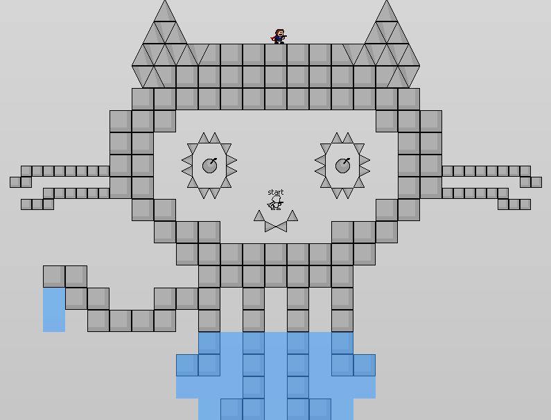

Building
Here's the steps to follow if you want to build the game from source yourself, so you can make tweaks, browse the code, etc. If you're making customized UI or similar tweaks, please let me know so that I might add them to the official version.
1. Get GameMaker: Studio
jtool doesn't use any Pro features other than changing the window caption and removing the splash screen, as far as I'm aware of, so the free version should work just fine. For reference, this project was made in version 1.4.1657.
2. Get the source
Download the source from
its Github repo. You can click the "Download Zip" button on the right of the page.
3. Download and import GMFileSystem
Link here. In GameMaker, Right click on the Extensions folder and click Import Extension. Select the *.gex file extension in the dialog, and open the extension file.
4. Set up project path
In the script mainInit, set global.editor_project_path to be the folder which contains the "skins" folder. This is used for saving and loading skins and the config file when running the game from GM.
5. Have fun!
If you're having trouble building from source, and you've double-checked and troubleshooted stuff, feel free to contact me and I'll try to help you out.
